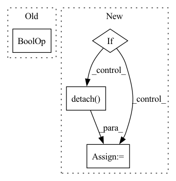

Pattern ID :9019
Before Change
Y = torch.tensor([Y])
elif isinstance(Y, list):
Y = torch.stack(list(map(self.as_unsqueezed_tensor, Y)), 1)
elif isinstance(Y, Tensor) and Y.ndim == 0 :
Y.unsqueeze_(0)
X = xAfter Change
Y = torch.tensor([y])
elif isinstance(y, list):
Y = torch.stack(list(map(self.as_unsqueezed_tensor, y)), 1)
elif = y.detach()
if Y.ndim == 0:
Y = Y.unsqueeze(0)
if isinstance(x, (int, float)):In pattern: SUPERPATTERN
Frequency: 3
Non-data size: 4
Instances Fragment ID: 32892069
Project Name: jeromerony/adversarial-library
Commit Name: 259e99eb30d6320da1a1273742bc0ded8bf0ff14
Time: 2021-07-20
Author: jerome.rony.1@etsmtl.net
File Name: adv_lib/utils/visdom_logger.py
M Class Name: VisdomLogger
N Class Name: VisdomLogger
M Method Name: accumulate_line(5)
N Method Name: accumulate_line(5)
M Parent Class:
N Parent Class:
M File Name: adv_lib/utils/visdom_logger.py
N File Name: adv_lib/utils/visdom_logger.py
M Start Line: 42
M End Line: 54
N Start Line: 42
N End Line: 58
Before Change
if self._REQ_GRAD:
x = [
tensor.detach().clone().requires_grad_(
self._REQ_GRAD and tensor.is_floating_point() )
for tensor in x
]
self.input_buffer[micro_batch_idx] = xAfter Change
x = self.layers(x)
else:
if self._REQ_GRAD:
if self._CLONE_INPUT:
x = [
tensor.detach().clone().requires_grad_(tensor.is_floating_point())
for tensor in x
]
else:
x = [tensor.detach() .requires_grad_(tensor.is_floating_point()) for tensor in x]
self.input_buffer[micro_batch_idx] = x
x = self.layers(*x) Fragment ID: 32892070
Project Name: saareliad/ftpipe
Commit Name: 13a17d63e0e609de18ec1f41efcf16b95b441a2c
Time: 2020-05-14
Author: saareliad@campus.technion.ac.il
File Name: pipeline/partition.py
M Class Name: PartitionWithoutRecomputation
N Class Name: PartitionWithoutRecomputation
M Method Name: forward(3)
N Method Name: forward(3)
M Parent Class: nn.Module
N Parent Class: nn.Module
M File Name: pipeline/partition.py
N File Name: pipeline/partition.py
M Start Line: 388
M End Line: 400
N Start Line: 402
N End Line: 419
Before Change
index_list = np.where(diff_numpy >= 1.0)
print("index_list:", index_list) if debug else None
index = index_list[1][0]
if index not in worker_type_list and index not in supply_type_list :
previous_bo.append(index)
return previous_bo
After Change
diff_count = torch.sum(diff).item()
print("diff between unit_counts_bow", diff_count) if debug else None
if diff_count >= 1.0:
print("diff:", diff) if debug else None
index = torch.nonzero(diff, as_tuple=True)[-1]
print("index:", index) if debug else None
index = index.detach() .cpu().numpy().tolist()
previous_bo.extend(index)
return previous_bo
Fragment ID: 32892059
Project Name: liuruoze/mini-alphastar
Commit Name: a115d8c35ded3fa3d608df5576d72a17cf941787
Time: 2021-12-10
Author: liuruoze@163.com
File Name: alphastarmini/lib/utils.py
M Class Name: AnonimousClass
N Class Name: AnonimousClass
M Method Name: calculate_build_order(3)
N Method Name: calculate_build_order(3)
M Parent Class:
N Parent Class:
M File Name: alphastarmini/lib/utils.py
N File Name: alphastarmini/lib/utils.py
M Start Line: 126
M End Line: 145
N Start Line: 111
N End Line: 135